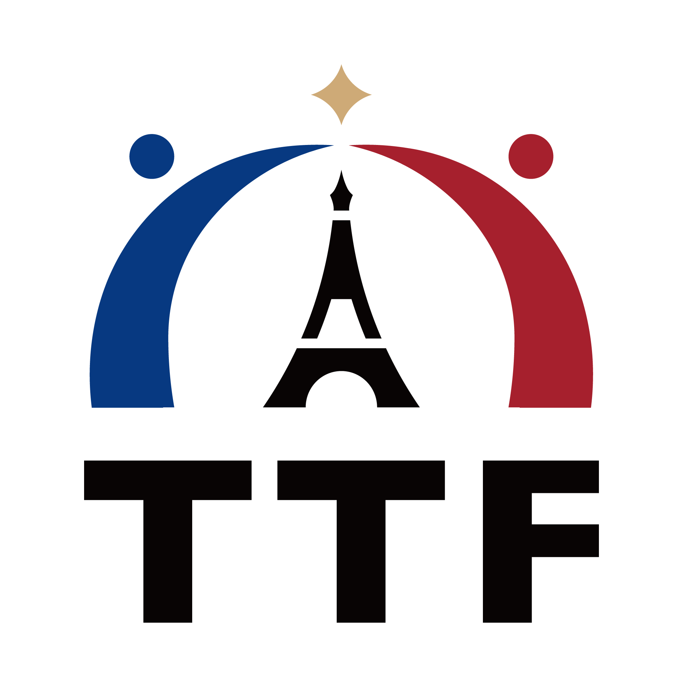

Talents de la tech
Étudiants, ingénieurs, freelances, entrepreneurs et professionnels de la tech
- Orientation professionnelle
- Vie de la communauté
- Développement du réseau
#RelierLesTalents #CréerDesOpportunités #ConstruireDansLaDurée
Association française à but non lucratif, TTF réunit les talents taïwanais de la tech en France, les professionnels, les entreprises et les institutions afin de faire vivre un réseau d’échanges technologiques dynamique et durable entre la France et Taïwan.
Rejoindre TTFAssociation à but non lucratif régie par la loi française

Notre mission
Pour qui ?
Étudiants, ingénieurs, freelances, entrepreneurs et professionnels de la tech
Entreprises, start-up, universités, organismes de recherche, acteurs publics et institutions
Notre approche
Nous commençons par comprendre votre parcours, vos objectifs, vos attentes et votre calendrier.
En fonction de votre besoin, nous identifions les membres, les intervenants ou le format les plus pertinents.
Nous organisons la rencontre en apportant le contexte utile et facilitons la suite si nécessaire.
Partenaires
Adhésion
Commencez par régler votre cotisation sur HelloAsso. Après confirmation, nous vous inviterons à compléter vos informations afin d’activer votre adhésion.
Contact
FAQ
Non. Que vous soyez membre ou non, vous pouvez nous présenter votre besoin. Nous vous aiderons à identifier la piste ou la ressource la plus adaptée.
Non. TTF est une association à but non lucratif. Elle favorise le partage d’expérience, la circulation des ressources et les premières mises en relation afin de créer des liens professionnels pertinents entre talents et organisations.
Étudiants, jeunes diplômés, professionnels de la tech, entreprises, établissements d’enseignement, organismes de recherche et partenaires sont tous les bienvenus.
Vous pouvez nous écrire en français, en chinois traditionnel ou en anglais. Nous vous répondrons dans la langue la plus adaptée à la situation.
Les membres peuvent participer aux activités de l’association, rencontrer des professionnels de différents secteurs et développer leur réseau en France comme à Taïwan grâce à la communauté TTF.
TTF ne propose ni placement ni garantie d’embauche. En revanche, les retours d’expérience, les échanges au sein de la communauté et certaines mises en relation peuvent vous aider à mieux comprendre le marché du travail et l’écosystème tech en France.
Cela dépend de l’événement. Certaines activités sont ouvertes à tous ; d’autres peuvent être réservées aux membres ou leur donner un accès prioritaire. Les conditions sont précisées dans chaque annonce.
Oui. TTF développe les liens professionnels entre la France et Taïwan. Vous pouvez donc nous contacter que vous soyez actuellement en France ou à Taïwan.